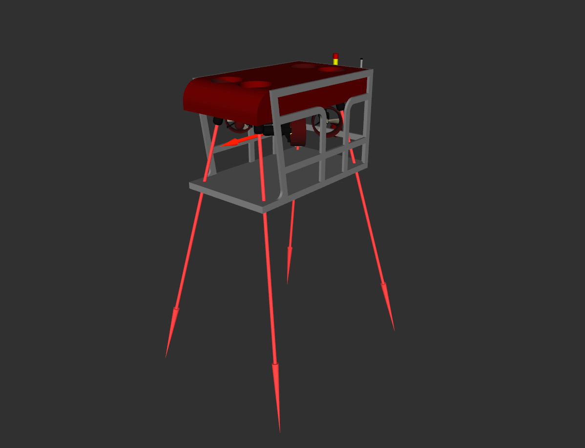

Configuring the thruster manager for a new vehicle¶
In order to generate control forces for thruster-actuated vehicles, it is necessary to compute the thruster allocation matrix, which will translate the output of the controller \(\boldsymbol{\tau}_C = (f_x, f_y, f_z, \tau_r, \tau_p, \tau_y)^T\) represented in the vehicle’s body frame, where \(f_i\) represents the forces and \(\tau_i\) represents the torques, into the output thruster forces \(\tau_i\) for each.
The simulation expects each thruster unit to have its own unique frame, which enables the use of tf to lookup the transformation matrix between the vehicle’s body frame and each thruster during runtime. Using this possibility, a package called uuv_thruster_manager has been developed to generate the thruster allocation matrix automatically and translating the control vector into commands to each thruster.
See also
Check the tutorial Creating a new underwater vehicle model to check on how to setup the new vehicle and actuators properly.
To create an initial package with the control configuration for a new vehicle, run the following in your catkin workspace
rosrun uuv_assistants create_thruster_manager_configuration --robot_name <ROBOT_NAME>
This script will create a new <ROBOT_NAME>_control package with initial templates for the launch and parameter files. If you already have catkin package where you want to store these files, run
rosrun uuv_assistants create_thruster_manager_configuration --robot_name <ROBOT_NAME> --output_dir <CATKIN_PKG>
The folder structure will look like the following
<ROBOT_NAME>_control
|-- config
|-- thruster_manager.yaml
|-- launch
|-- start_thruster_manager.launch
You should edit the thruster_manager.yaml file to include the correct thruster model parameters and topics. Instructions on how to do it can be found in the comments on the same file. Here is an example from the RexROV vehicle thruster manager configuration:
thruster_manager:
tf_prefix: rexrov
base_link: base_link
thruster_topic_prefix: thrusters/
thruster_topic_suffix: /input
thruster_frame_base: thruster_
max_thrust: 100000.0
timeout: -1
update_rate: 200
conversion_fcn: proportional
conversion_fcn_params:
gain: 0.00031
Once the configuration is done, the thruster allocation matrix file should be generated and store. The TAM matrix can be generated in runtime everytime the simulation starts, but it is recommended to store and read it from a file since the tf_listener can take a long time to find all frames and will therefore make the vehicle inactive for a while at the beginning of the simulation. To do this, you must compile you catkin workspace
cd ~/catkin_ws
catkin_make
or
cd ~/catkin_ws
catkin build
Note
You can run
cd ~/catkin_ws
source devel/setup.sh
if after compiling your package seems to not be found.
A TAM.yaml file will be stored in the config folder once you start a Gazebo world
roslaunch uuv_descriptions empty_underwater_world.launch
and then include the vehicle
roslaunch <ROBOT_NAME>_description upload.launch
and finally run
roslaunch <ROBOT_NAME>_control start_thruster_manager.launch reset_tam:=true
From now on, if you always start the thruster manager using the launch file above (using the reset_tam as false), you can load the TAM matrix.
To command the vehicle, you have to start the thruster manager and publish a ROS Wrench message to the input topic
/<ROBOT_NAME or ROBOT_NAMESPACE>/thruster_manager/input
with the wrench command to the vehicle. The thrust forces will be generated at each thruster’s unit frame like in the RViz screenshot below.
